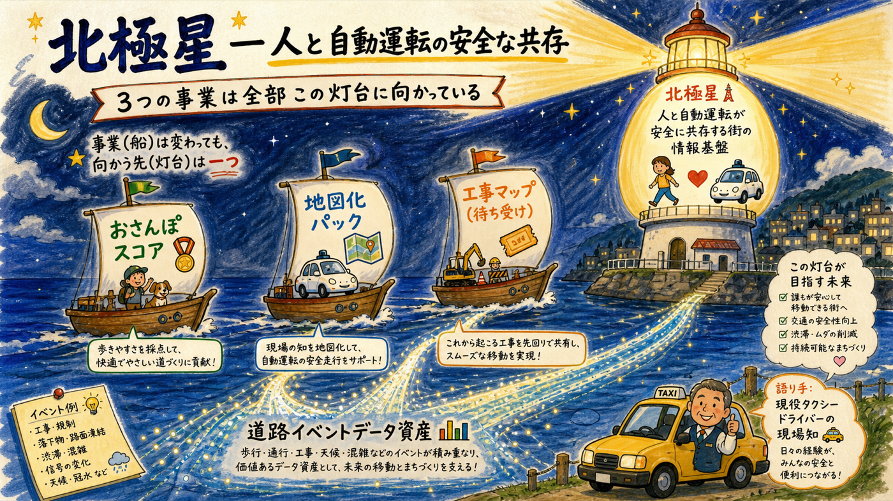
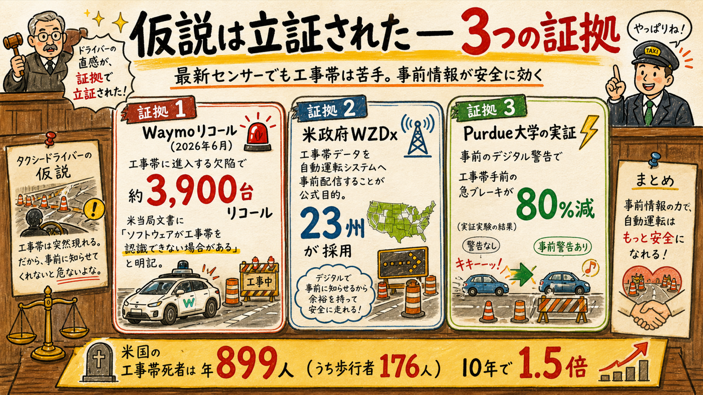
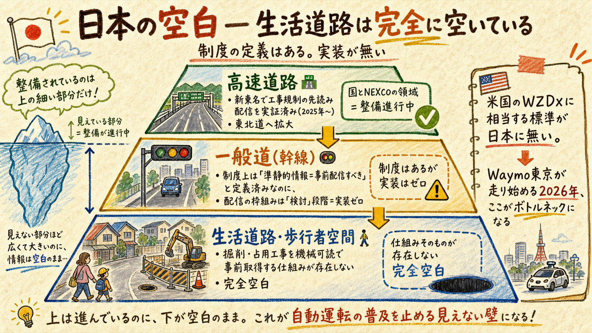
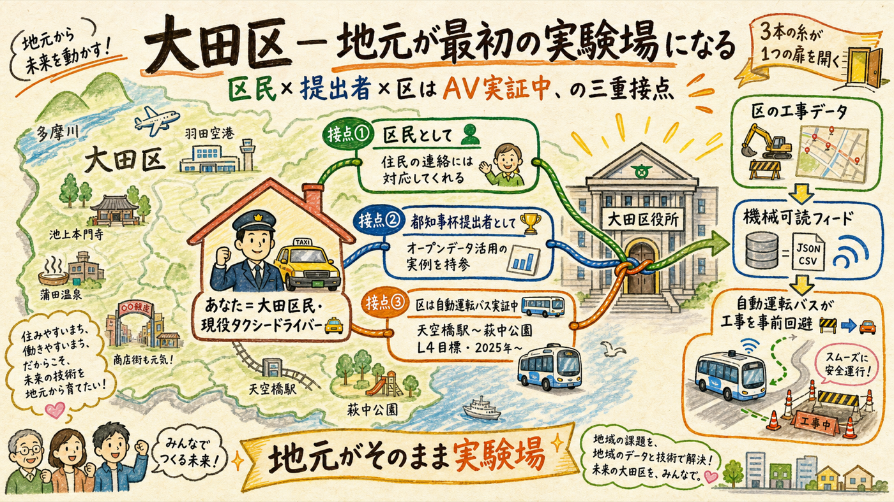

「自動運転は周辺しか見ていない。事前の工事情報でルートを選ばせれば、歩行者と車の物理リスクを減らせる」— タクシードライバーとして路上で得たこの直感を、米国のリコール文書・政府標準・日本の政策資料で検証した。結論: 仮説の核心は正しく、言い方を一箇所直すとさらに強くなり、そして日本の生活道路はこの分野で完全な空白だった。これを事業の北極星として戦略に組み込む。
大目標は事業を増やさない。既存の3レーンを1本の物語に束ねる

北極星（確定）: 「人と自動運転車が安全に共存する街のための、道路イベント情報基盤」。具体的に取れるポジションは「一般道版WZDx」の先行実装者 — 区市町村の工事・占用データを機械可読フィードに変換し、自動運転事業者・地図会社へ配信する役。おさんぽスコア（歩行者安全データ）も地図化パック（現場データ収集の筋肉）も工事マップ待ち受け（B2G関係）も、すべて同じ資産に積み上がる — 現戦略と完全に整合し、変更は不要。
そしてこの北極星の語り手として、あなたには他の誰にもない資格がある: 現役タクシードライバーとして毎日東京の路上で物理リスクを観察している人間が、地図とAIを自分で作れる。「地図を作る人」という発信の軸ともそのまま重なる。
直感が、リコール文書と政府標準で裏付けられた

| 証拠 | 内容 | 出典（一次） |
|---|---|---|
| Waymoリコール (2026年6月) | 高速道路の工事帯にコーンを越えて進入する事案13件（Phoenix 6・SF 7）→ 第5世代3,871台をリコール。当局届出に「ソフトウェアが工事帯を認識できない、または他のハザード回避を優先する場合がある」と明記 | NHTSA Part 573 Report 26E035 |
| Cruise生コン事件 (2023年8月) | SFの舗装工事帯に進入し生コンに前輪埋没。営業拡大承認の1週間後で規制強化の引き金に | 報道（Forbes・SF Standard） |
| 米政府WZDx | 連邦道路庁の公式目的: 「工事帯データを車両に届け、自動運転システム(ADS)と人間ドライバーがより安全に走行できるようにする」。掲載場所自体が transportation.gov の自動運転セクション配下。23州分のフィード | FHWA / USDOT公式 |
| 効果の定量実証 | Purdue大の実証: Waze等への事前デジタル警告で工事帯手前の急ブレーキが80%減。米国の工事帯死者は2023年899人（うち歩行者176人）で10年間に+50% | FHWA統計（一次）・Purdue研究（二次） |
制度の定義はある。実装が無い。この差が機会

| 階層 | 現状（一次情報） | 評価 |
|---|---|---|
| 🛣️ 高速道路 | 新東名で工事規制・落下物の「先読み情報」をV2I配信する実証済み（2025年3月〜）。国交省資料に「規制事象への車線変更の一連の流れを確認」。2026年は東北道へ拡大 | 国とNEXCOの領域 — 参入余地なし・ただし国が「事前配信は効く」と自ら実証してくれた |
| 🚦 一般道（幹線） | SIP-adusダイナミックマップで工事(予定)情報は「準静的層＝事前配信すべき情報」と制度定義済み（内閣府一次）。しかし配信の枠組みは国交省資料で「収集・提供の枠組みを検討」＝実装ゼロ。HD地図も高速中心から拡張中の段階 | 制度と実装のギャップ — 3〜5年の時間差 |
| 🚶 生活道路・歩行者空間 | 掘削・占用工事を機械可読で事前取得する仕組みが存在しない。WZDx相当の標準も無い。現場のAVは「検知して停止・手動介入」が実態（BOLDLY境町は路上駐車を住民に控えてもらう運用）。Waymo東京は都心7区でデータ収集中・近くローンチ報道 | 完全空白 — ここが北極星のポジション。人とAVが共存する空間こそ、歩行者起点の粒度が必要 |
タイミングの意味: Waymo東京の面的走行が始まる2026年、生活道路の工事事前データの不在がボトルネックとして顕在化する。国の枠組み検討が進む前の今が、実装で先行できる時間帯。
言い方を直すと、仮説はもっと強くなる
正確に言うと、AV各社は既に「事前データ＋センサーの二段構え」で設計している。WaymoはHDマップと実走の差分を全車で共有し、Mobileyeは150万台超の市販車から工事標識をクラウド収集して「工事帯を事前に知り動的にルート調整する」と公式に説明している。それでもWaymoのリコールは起きた — 自前のクラウドソースだけでは、現場で今日始まった掘削や歩道閉鎖を確実には拾えないから。
ピッチや発信でこの言い方を使うこと: 「自動運転はセンサーを磨いてきたが、現場で今日変わったことは路上を走る前には分からない。私はその『今日変わったこと』を、現場・行政・住民から集めて機械が読める形にする側をやる」。
3レーンもG-Pゲートも90日プランも不変

| 変更点 | 内容 |
|---|---|
| ① 北極星条件（第7条件）を追加 | 事業選定の基準に「道路イベント／歩行者安全データが資産として積み上がるか」を追加。現3レーンはすべて適合済みなので選び直しは不要 — 今後の新規実験の選定にだけ効く |
| ② 8月の行政接点を大田区に設定 | 3回接触モデルの橋B（行政窓口）の具体化: 大田区の道路管理課へ「区民×都知事杯提出者」として問い合わせ。区はL4目標の自動運転バス実証中なので、「工事情報の機械可読化はAV実証にも効く」という提案の受け皿が既にある。あなたの読み（住民の連絡には対応してくれる）とも整合 |
| ③ 待ち受けトリガーを3つ追加（AI監視） | (a) 国交省「自動運転向け道路交通情報の収集・提供枠組み」検討の進展 (b) Waymo東京の面的展開 (c) 大田区実証の拡大。動きがあれば即あなたに上げる |
| ④ ハッカソン原稿に将来展望を1〜2文追記 | entry原稿の備考へ: 「将来的には工事情報を機械可読フィード化し、自動運転時代に人と車が安全に共存する街の情報基盤を目指す（米国ではWZDxとして政府標準化済み・国内の生活道路は空白）」。Waymoリコール・大田区実証という時事性は審査に刺さる |
| ⑤ 変えないもの | 3レーン・G-Pゲート（10月末）・撤退基準・週3時間上限・今週フォーム提出。北極星は「今日やることリスト」を1行も増やさない — 判断基準と物語の背骨として機能する |
期待値の正直な整理: 一般道の自動運転が面的に普及するのは2020年代末〜2030年代で、北極星から今すぐ売上は生まれない。だからこそ「事業」ではなく「北極星」— 稼ぐのは3レーン、向かう先はこの灯台、という役割分担を崩さないこと。焦って「AV向けデータ事業」を今の主戦にしないのが、この組み込みの最重要ルール。